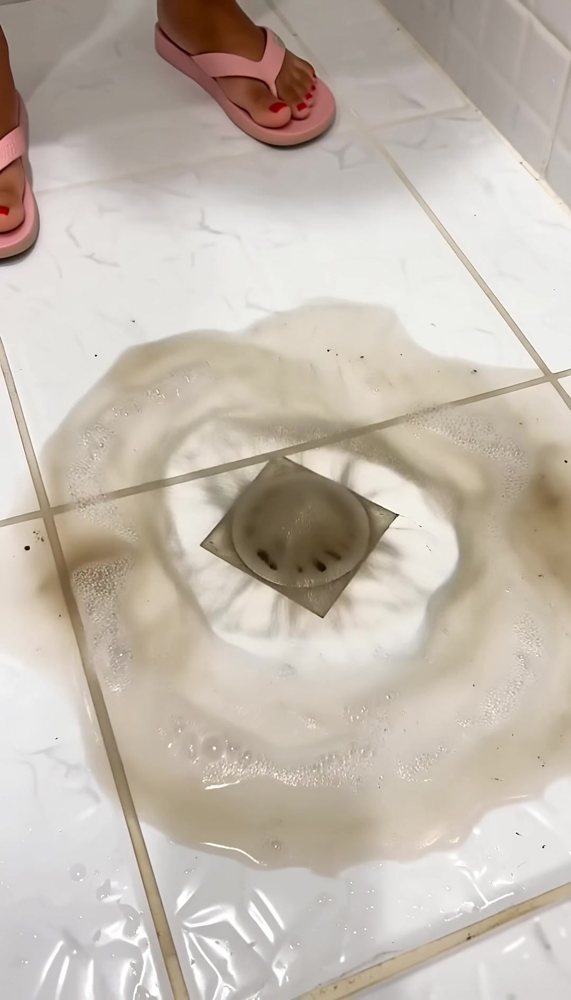
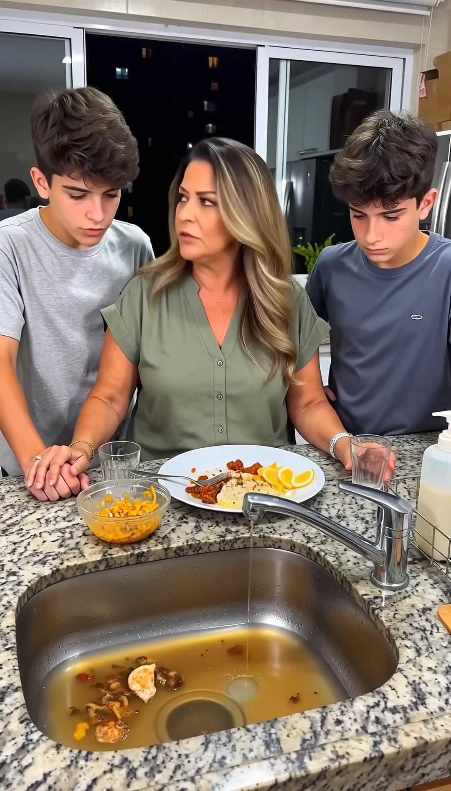
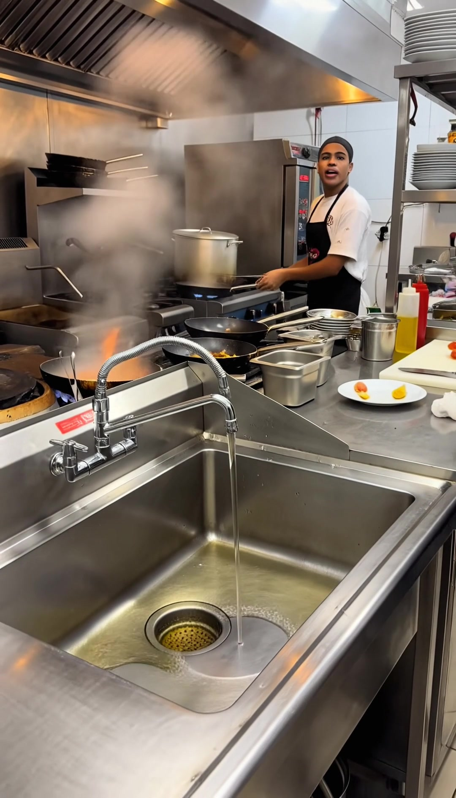
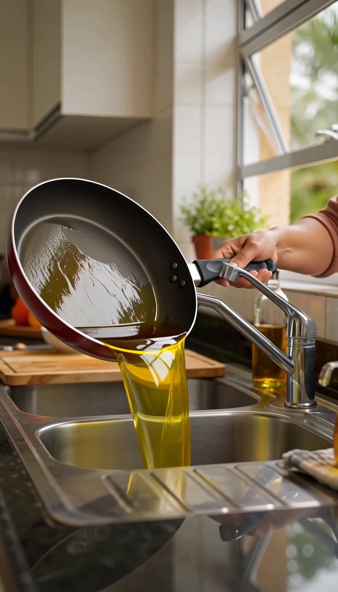
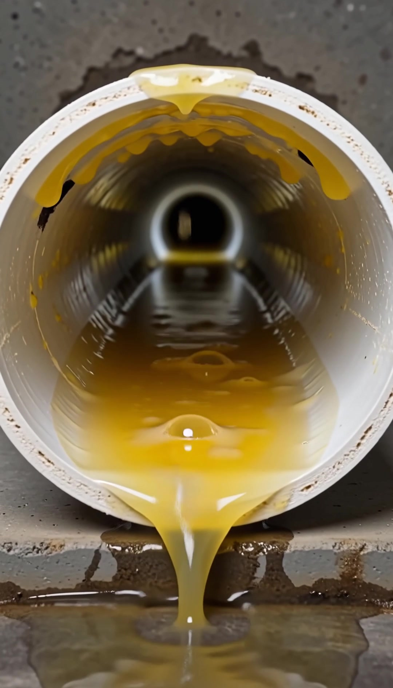
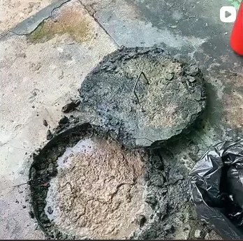
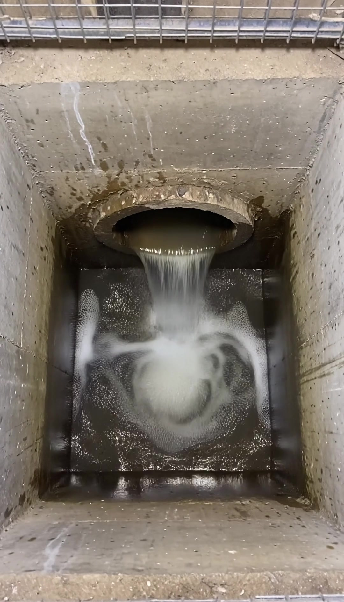

Antes de entupir
5 sinais que
o cano dá
Arraste para o lado →
@desentupidorasf_slzWhatsApp (98) 92010-5710
1/7

Mesmo com tudo limpo, o mau cheiro volta pelo ralo ou pela pia. É sinal de sujeira e gordura parada dentro do cano.

Pia, ralo ou chuveiro escoando devagar: o cano já está estreito por dentro. Daqui a pouco, para de vez.
Quando o ralo gorgoleja depois que a água desce, é ar preso tentando passar pela sujeira. Sinal 03.


Entupimento pequeno vira grande quando a gente espera. Resolver no começo evita água suja voltando dentro de casa.

É o campeão de entupimento. Quente ele desce fácil; no cano, esfria e vira uma crosta que vai fechando a passagem.

Cada vez que o óleo desce, uma camada nova se junta à anterior. Um dia a água não passa mais.
Lenço umedecido, fio dental, absorvente, cabelo e cotonete no vaso. Eles não se desfazem na água e formam um bolo no cano.
No vaso, só papel higiênico. O resto vai no lixo do banheiro.
Espere esfriar, guarde numa garrafa PET fechada e leve a um ponto de coleta para reciclagem.

É a caixinha que segura a gordura da pia da cozinha antes de ela ir para o esgoto. Quando enche, a gordura passa direto e entope o cano.
Em prédio, restaurante, lanchonete e padaria, muita gente usa a mesma caixa. Ela precisa de atenção com mais frequência.
do que parar a cozinha no meio do almoço com a pia transbordando.
Depende do uso: quanto mais fritura e movimento, mais vezes. Na dúvida, mande uma foto da caixa aberta que a gente avalia.

Soda cáustica: é corrosiva, pode danificar o cano e causa queimaduras graves na pele e nos olhos.
Chamar quem desentope com equipamento, sem produto agressivo dentro de casa.
Em vez de tirar a sujeira, o arame costuma empurrar o entupimento mais pra dentro e ainda pode furar ou rachar o cano.

Derrete só por um momento. Alguns metros depois a gordura esfria e endurece de novo, num lugar mais difícil de alcançar.
A máquina leva um cabo de aço girando até o ponto do entupimento e desfaz a sujeira por dentro. Na maioria dos casos, sem quebrar piso nem parede.